Care / 01

Skilled Nursing Operations
Alta Gardens
Leading a 160-person skilled nursing operation through rapid growth, full occupancy, and a more disciplined operating model.
- My role
- I serve as Administrator, leading clinical, administrative, and support teams across census, payer mix, staffing, compliance, referral growth, and specialty service lines.
- Why it matters
- Monthly revenue grew from $1.2M to $2.5M, occupancy rose from 85% to 100%, and overtime and double-time fell from 15% to 3%.